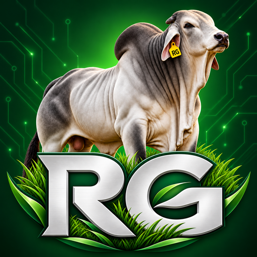
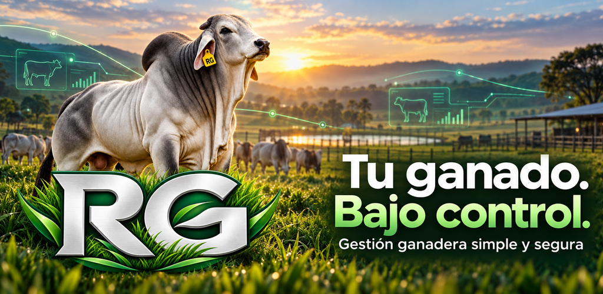

Identificación y fotografías
Arete, nombre, sexo, raza y fecha de nacimiento. Una ficha para identificar cada animal y consultar sus fotografías.
La información de tus animales, organizada en un solo lugar y disponible en tu teléfono.
REGA permite registrar animales, consultar su historial y dar seguimiento a la actividad ganadera. Sus funciones principales trabajan con datos locales, incluso sin conexión a Internet.


Arete, nombre, sexo, raza y fecha de nacimiento. Una ficha para identificar cada animal y consultar sus fotografías.
Organiza animales activos, vendidos, fallecidos y extraviados. Consulta los cambios y eventos que registras.
Registra padre y madre, vacunaciones, desparasitaciones y tratamientos para conservar el seguimiento de cada animal.
Genera exportaciones y conserva respaldos manuales .rega. Tú eliges dónde guardar o compartir tus archivos.
StroyApps no recibe automáticamente tus fichas ganaderas. Consulta la política para conocer el almacenamiento, los respaldos y la publicidad.